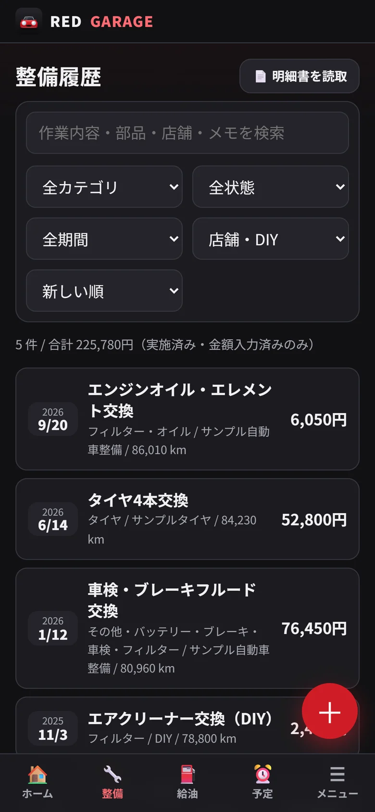

整備記録
日付・走行距離・店舗・部品・工賃。1回の整備を明細ごとに残し、メーカーや型番、次回の交換予定まで記録できます。
いつ、どこで、何を、いくらで。あとから振り返りたくなる情報を、迷わず残せるように設計しました。
日付・走行距離・店舗・部品・工賃。1回の整備を明細ごとに残し、メーカーや型番、次回の交換予定まで記録できます。
整備明細書を撮影すると、文字を読み取って自動で入力。内容を確認してから登録するので、間違いが残りません。
満タン法で正確な燃費を計算。部分給油や記録漏れがあっても、間違った数字を出さないように区間を判定します。
オイル交換、車検、保険、税金。日付と走行距離の早いほうでお知らせ。スマホのカレンダーにも登録できます。
月別・年別・カテゴリ別のグラフ。明細と合計を二重に数えない集計で、本当の維持費がわかります。
パーツ、取り付け日、装着状態、費用。愛車が自分らしくなっていく歩みを、時系列で振り返れます。
紙のまま埋もれがちな整備明細書。スマホで撮れば、日付・走行距離・店舗・部品代・工賃・合計を読み取って、整備記録の下書きを作ります。
※ 画像を外部に送信することはありません。手書きや不鮮明な写真は読み取り精度が下がります。登録前に必ず内容をご確認ください。





何年分もの整備記録は、二度と作り直せない財産です。8 つの仕組みを重ねて、うっかりの削除や機種変更から守ります。